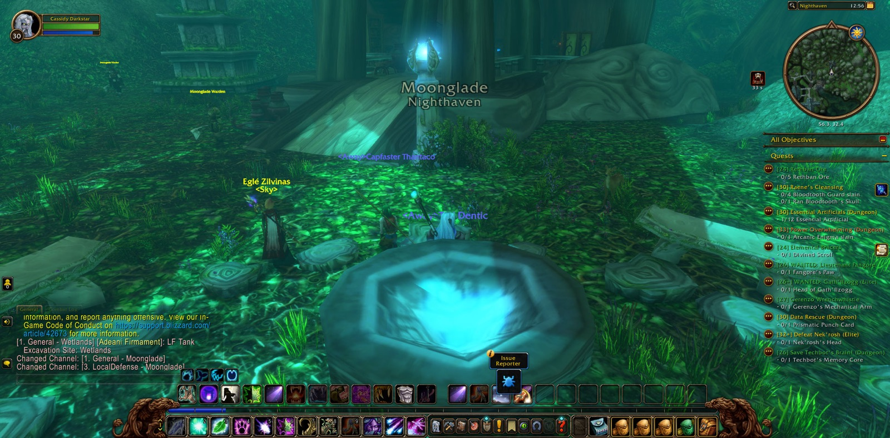
Cassidy Darkstar set out from Menethil Harbor in the Wetlands. From there he came to Nighthaven in Moonglade, and he took a picture of the moment, as he would at many borders after. He went past Lake Elune'ara and down into Darkshore by the Ruins of Mathystra and Mist's Edge, and over the Veiled Sea to Rut'theran Village beneath Teldrassil. Then he turned back by Auberdine, the Long Wash and Twilight Shore to the Zoram Strand of Ashenvale. From there he went on southward through Stonetalon Peak and the Charred Vale. He crossed Desolace by Tethris Aran, Kolkar Village and Magram Village, passed Bristleback Retreat and the Valley of Bones in Shen'dralas, and went over Mulgore and the Rolling Plains. He followed the Southern Gold Road of the Barrens past Bramblescar and Northwatch Hold to the Merchant Coast. So he came at last by Dreadmurk Shore to Theramore Isle.
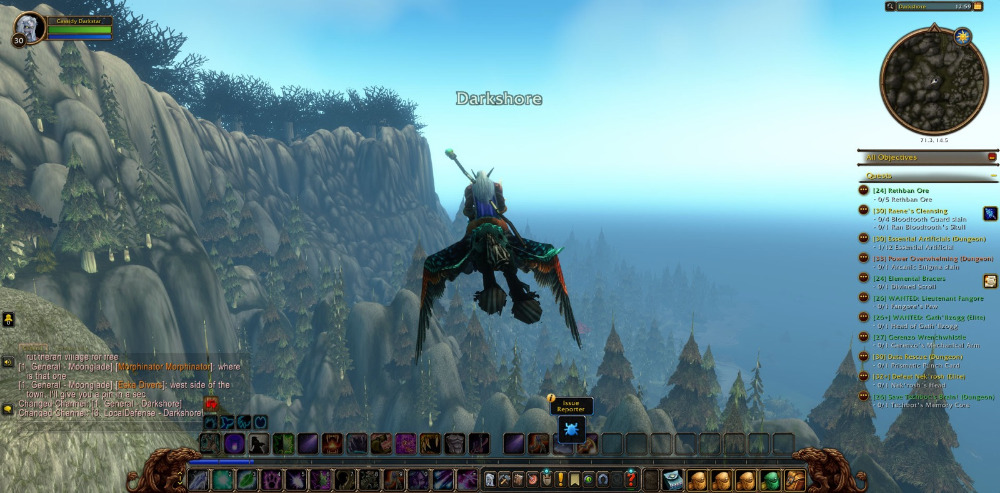
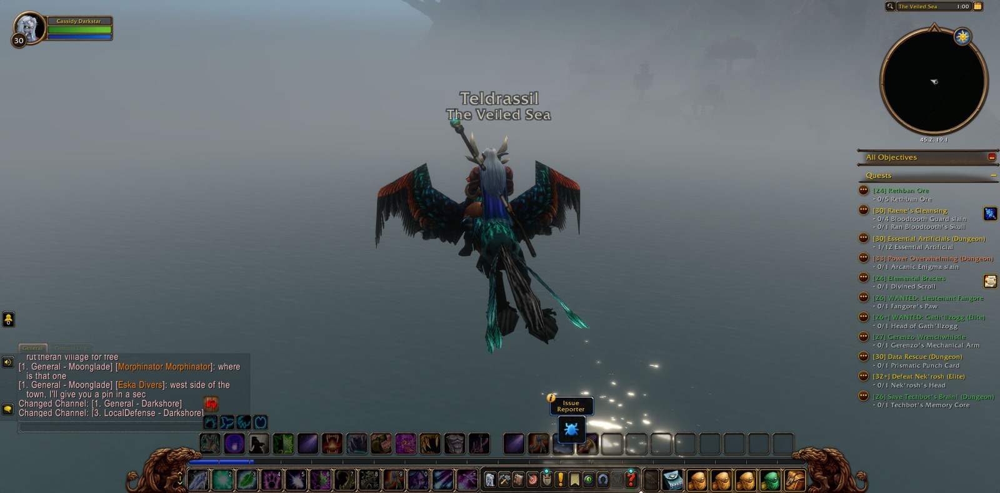
There, in Foothold Citadel, he saw the errand of James Hyal through to its end, and he took up two more: Highperch Venom, and a Journey to Astranaar. He crossed the Great Sea to Baradin Bay and back, and then went south to Tanaris, to Wavestrider Beach, Steamwheedle Port and Gadgetzan. In Tanaris he fell, and rose again, and did not linger. From Nighthaven he took up the long road once more, through Darkshore and into Ashenvale by Lake Falathim and the Shrine of Aessina. At last he stood in Astranaar, and the journey that bore its name was done.
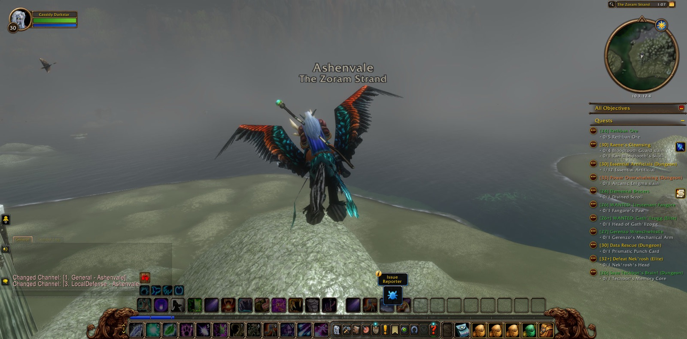
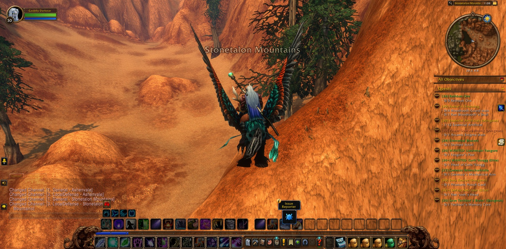
When he went on, he crossed the sea to the Deepwater Tavern and Menethil Harbor. He passed through Dun Morogh by the Gates of Ironforge, Steelgrill's Depot and Kharanos, and through the Searing Gorge by Firewatch Ridge and Blackchar Cave. He went past the Altar of Storms and Draco'dar in the Burning Steppes, and down into Elwynn Forest by Northshire Valley, until he came to the Valley of Heroes and the Trade District of Stormwind City. There a great company had gathered, and Cassidy joined them. Among them were druids of his own calling, Laser and Hypershift, and Rambleon the hunter, who kept faith with him longer than any other on that road. With Thadius, Thalaria, Willy and Belgarion he went down to Mirror Lake, the Stonefield Farm and Fargodeep Mine. Companions came and went about him as the company thinned and gathered again. In Goldshire he came to the Lion's Pride Inn and took a picture there.
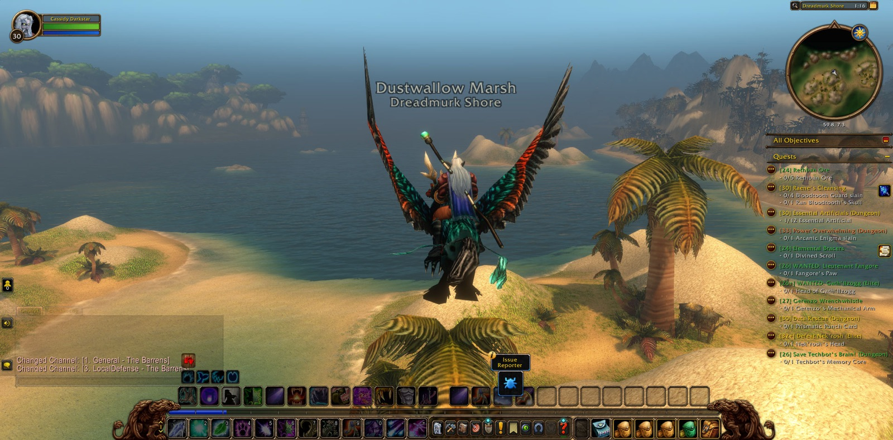
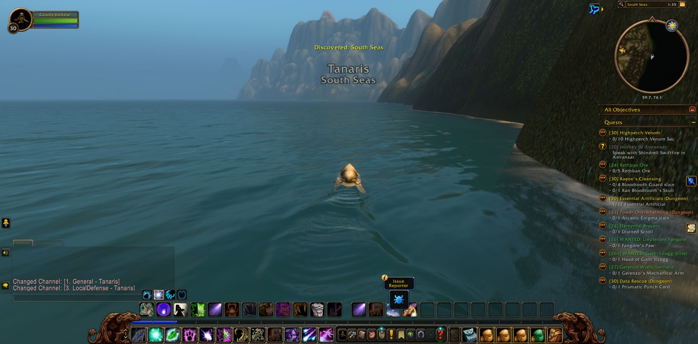
Again and again the road led back to the Stonefield Farm. A second fellowship formed at Forest's Edge, near Westbrook Garrison: Bleu and Bald, Tlazol and Parvi, Potato and many more. With them he crossed into Duskwood, by the Darkened Bank, Raven Hill and its cemetery, and Forlorn Rowe, and then came back again. Parvi the warlock walked beside him through much of what followed. Later a fourth gathering came together, with Cathoria and Ignius, Sabel and Prigity, and some thirty others besides. At the last Cassidy took up an Assassin's Contract, to be borne to Magistrate Maleb in Southshore. The road toward Southshore lay open before him.
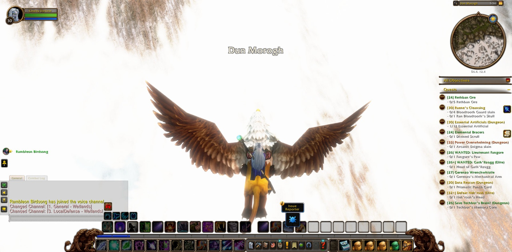
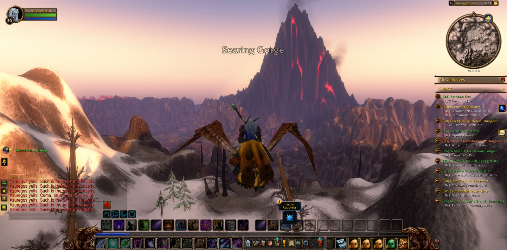
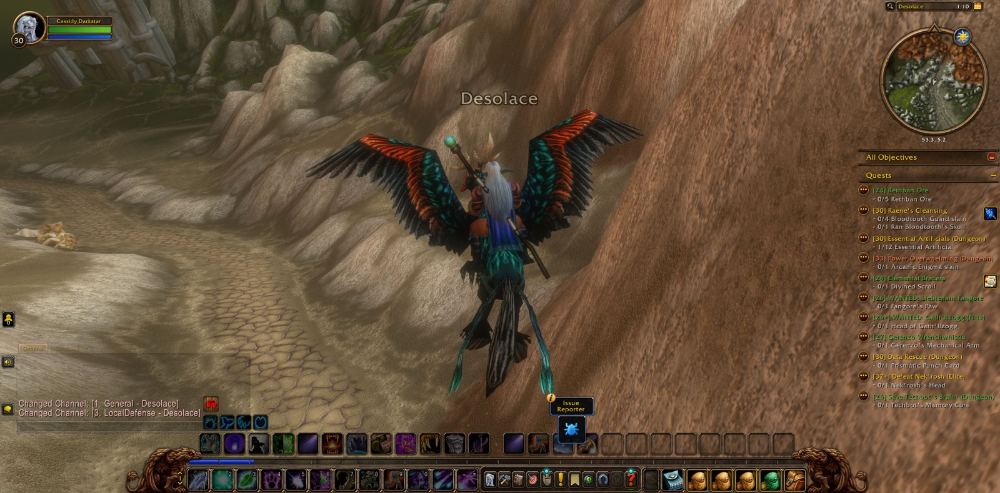
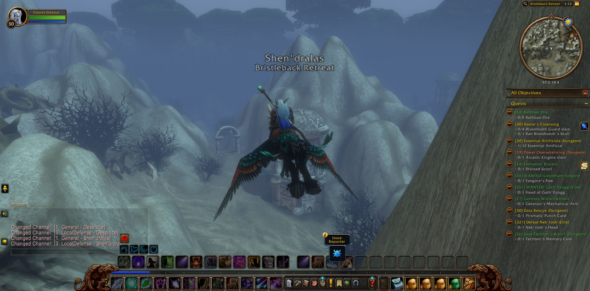
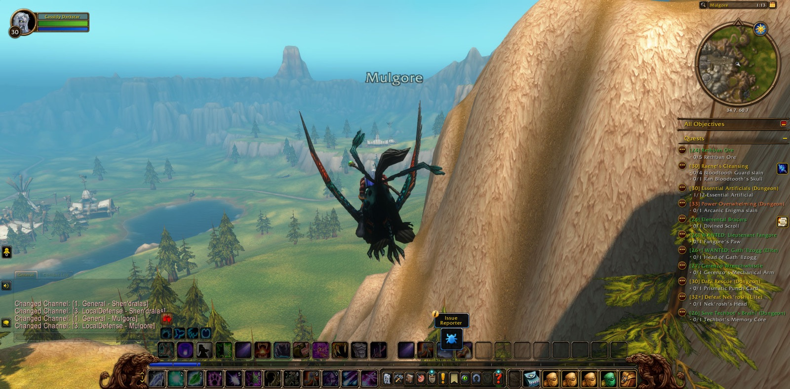
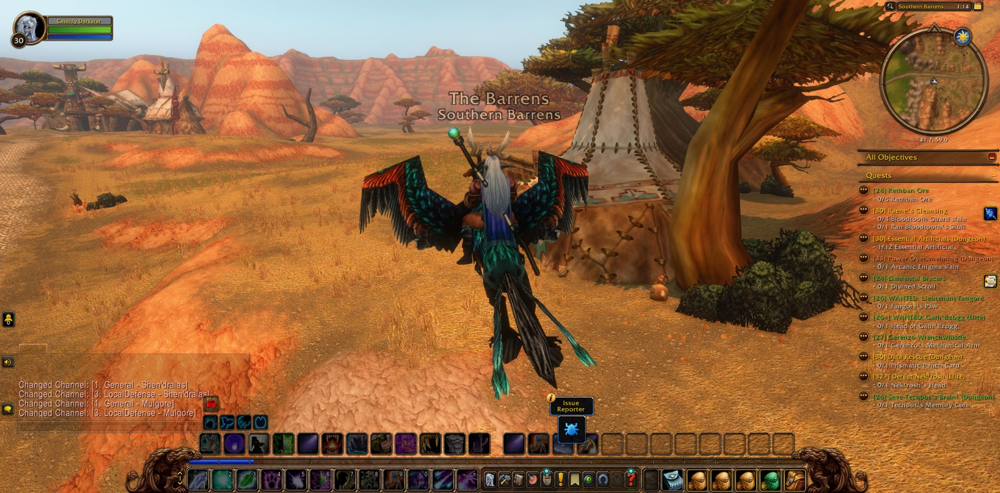
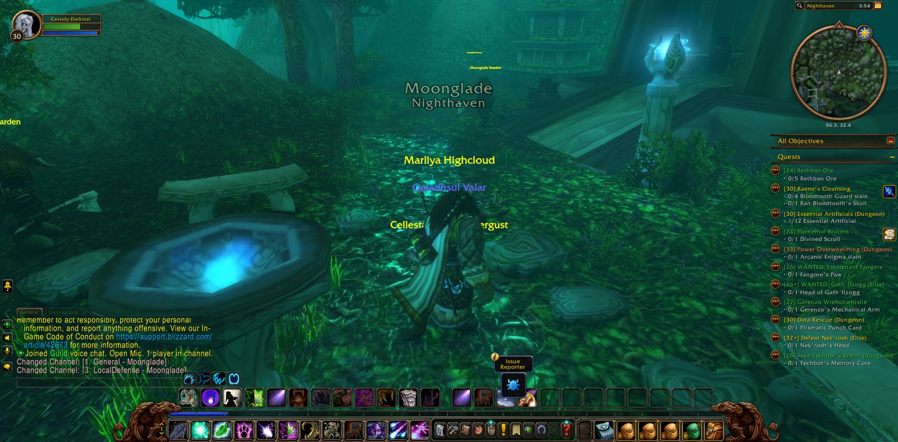
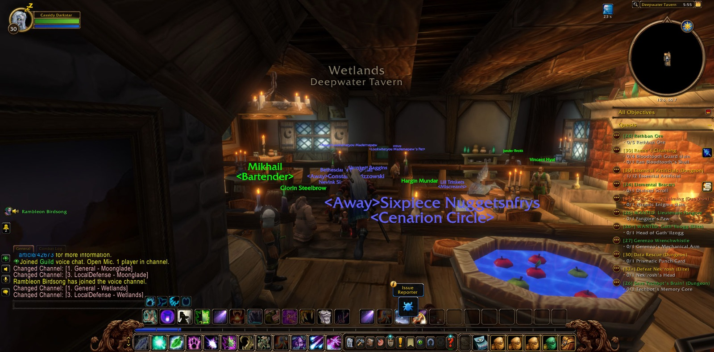